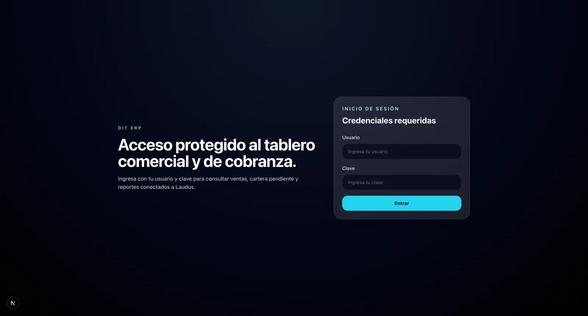
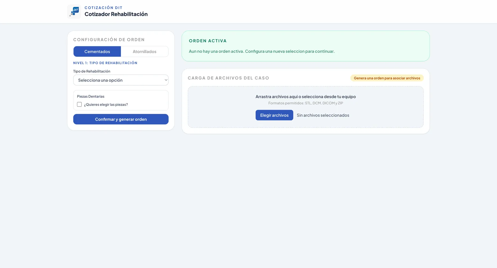
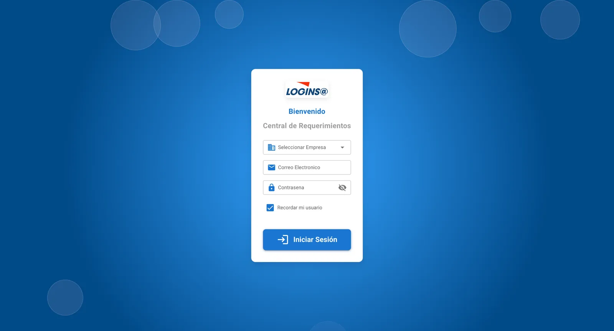
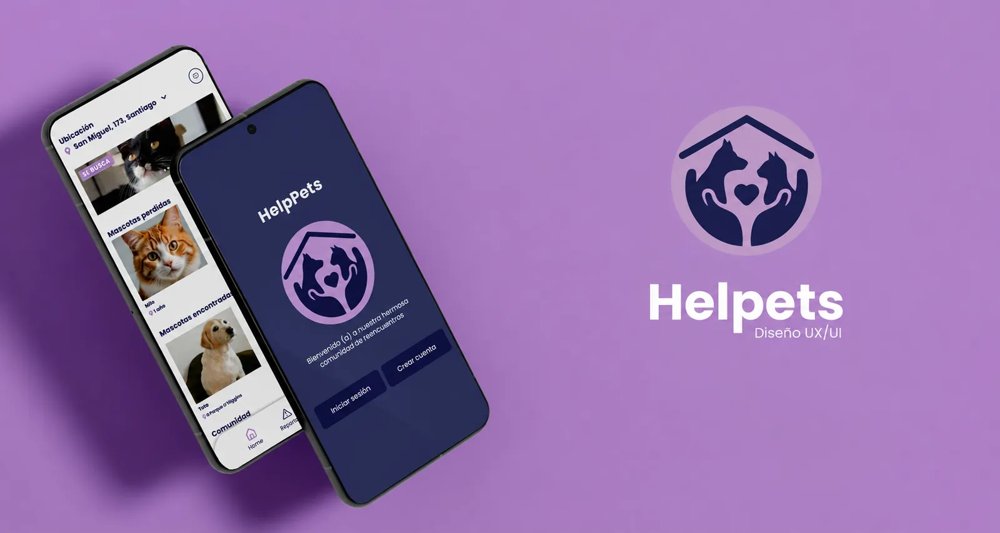
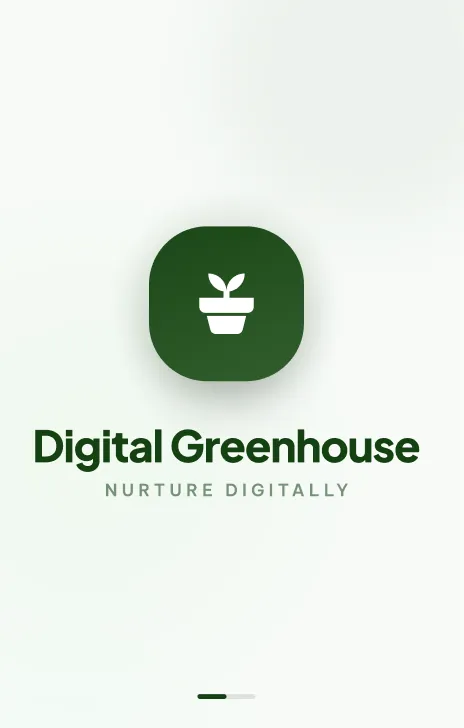
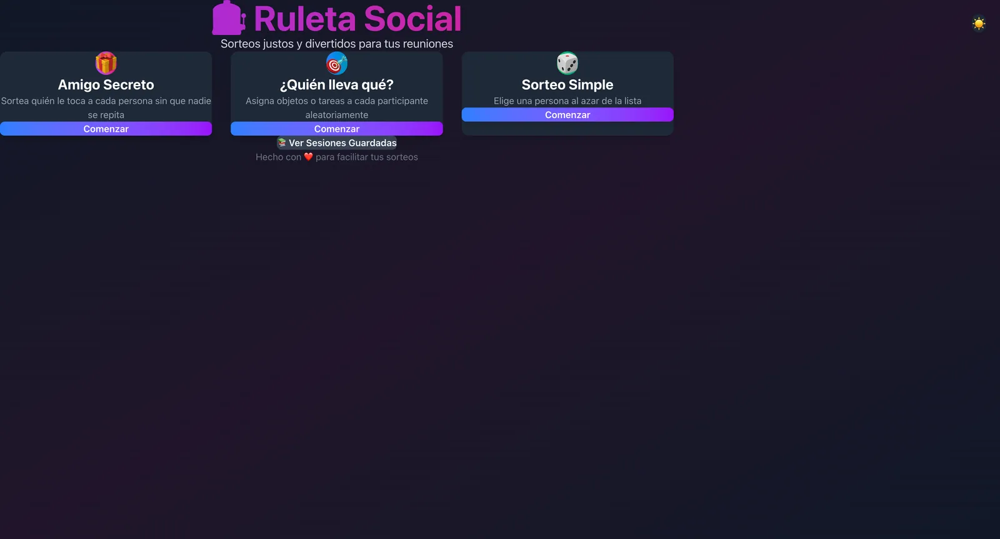
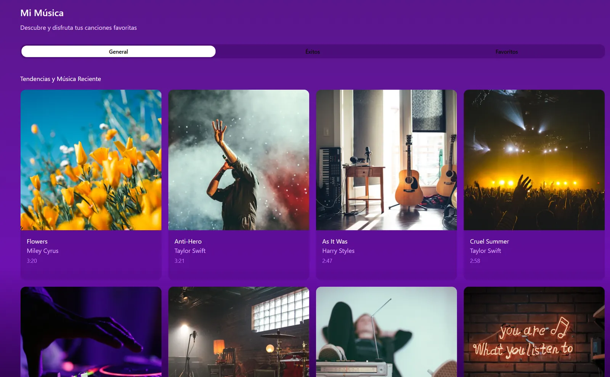

DIT Chile · Freelance
DIT ERP: tablero comercial y de cobranza
Panel interno para consultar ventas, cartera pendiente y reportes conectados al ERP Laudus, con acceso protegido por usuario y clave.
- Next.js
- TypeScript
- API Laudus
Desarrolladora full stack. Diseño la interfaz en Figma y la llevo a producción con React, Next.js, Angular y NestJS.
Sistemas que hoy usan empresas reales, más algunos casos de diseño.

DIT Chile · Freelance
Panel interno para consultar ventas, cartera pendiente y reportes conectados al ERP Laudus, con acceso protegido por usuario y clave.

DIT Chile · Freelance
El laboratorio configura el tipo de rehabilitación (cementada o atornillada), elige las piezas, genera la orden y adjunta los archivos del caso en STL, DCM, DICOM o ZIP.

Loginsa · Full Stack
Plataforma donde los clientes de Loginsa ingresan por empresa y gestionan sus requerimientos, conectada al ecosistema del WMS de la compañía.

HelpPets Caso de estudio UX/UI: app para dueños de mascotas, de la investigación al prototipo. Ver en Behance
Digital Greenhouse Caso de estudio UX/UI con investigación de usuarios y prototipo en Figma. Ver en Figma
Ruleta Social Sorteos para reuniones: amigo secreto, reparto de tareas y sorteo simple. React · TypeScript
Mi Música Interfaz para descubrir canciones, ver éxitos y guardar favoritas. Proyecto personalSalud, logística y laboratorio dental: productos donde un error de interfaz cuesta caro.
Plataforma para laboratorio dental. Diseñé el seguimiento de pedidos de punta a punta (MySQL, Sails.js y Angular), definí el control de acceso por roles e integré notificaciones por WhatsApp. También gestiono la infraestructura: imágenes Docker, servidor VPS y migración a GitLab.
Funcionalidades en React y Next.js para un sistema WMS, conectadas a APIs REST. Participé en cada feature desde la definición con producto hasta el despliegue, en sprints Scrum y Kanban.
Interfaces en React para personal médico de la salud pública, responsivas para los distintos dispositivos de los centros de salud, trabajando con modelos de datos clínicos junto a backend y UX.
Sigo estudiando: ahora mismo, cloud con AWS.
Preparando el examen de certificación de AWS.
Formación práctica en administración cloud sobre AWS.
Lo que uso en el día a día.
TypeScript, React, Next.js, Angular, Vue / Quasar, Tailwind
Node.js, NestJS, Sails.js, APIs REST, MySQL
AWS (EC2), Docker, Azure DevOps, GitLab, VPS
Figma, investigación UX, prototipos, design systems, accesibilidad (WCAG)
Disponible para proyectos freelance y cargos full stack.
vero.urrutiaa@gmail.com